December 21, 2009 - January 1, 2010
| Eric and I spent Christmas with each of our
families again this year. This arrangement seems to work well for us
as Montana is too cold for me and Westville is too quiet for Eric. He
enjoyed the bustle of his 27 closest relatives around him while I enjoyed
many quiet games of Scrabble and Dominos. Turns out we got MUCH more
snow in Oklahoma than Eric even saw in Montana. |
|
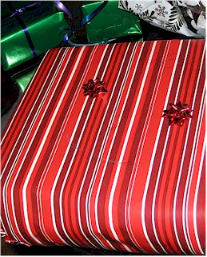 |
|
| Eric & I started Christmas with our own celebration
before he left. Here, he couldn't find the normal-sized bows so he made this adorable smiley-face out of tiny bows. |
Happy 40th to me! An early-morning pile o' presents greeted me for my birthday on the 24th. |
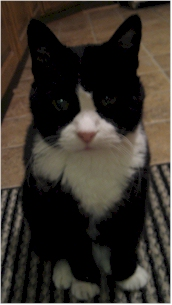 Beautiful Momma Kitty |
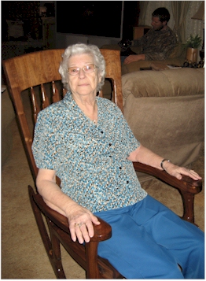 |
| Keith made this amazing rocking chair for Mom for Christmas. Here Gran tries it out. |
|
| The craftsman Keith & little Prisser Pants. | Mom, proudly trying out her new chair. |
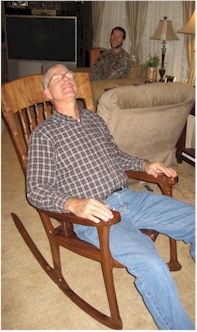 |
|
| I think Dad likes it, what do you think?!
|
|
|
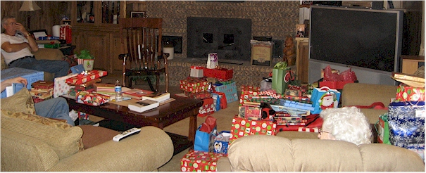 The overwhelming number of gifts before our opening on Christmas Eve night. |
|
|
Prisser was worn out by all the festivities. |
|
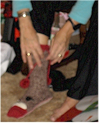 |
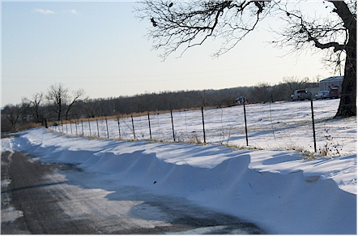 |
| Some of Mom's favorite gifts: a Grinch hat, a cage
fighting shirt, and "Monkey Feet" house shoes. |
Christmas Eve night brought snow, here's a view of a drift we
saw on a very pleasant drive Mom, Dad, and I took on Christmas day. |
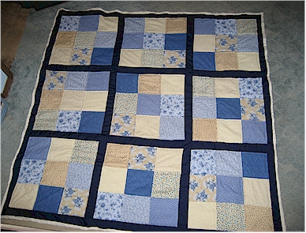 |
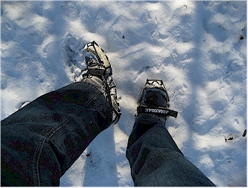 |
| The quilt I made for my sister Desirae, it took me until
Christmas Day to finish it. |
One of my gifts, Yak Trax, came in handy very quickly! |
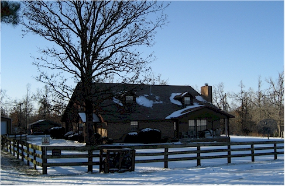 |
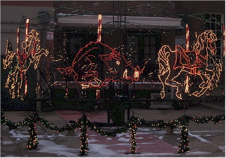 |
| The house in the snow, looks nice, doesn't it? |
In Fayetteville for after-Christmas shopping, we saw this
lighted Razorback on the town square. |
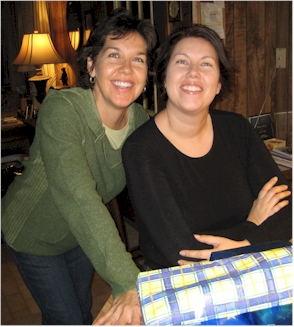 |
|
| Desirae, opening her birthday gifts from me a bit early. She will turn 30 on January 10th. We look more alike in this picture than we ever have (to me.) |
Eric returned from Montana on the 31st. Here he starts on the pile of gifts sent from my family. |
| 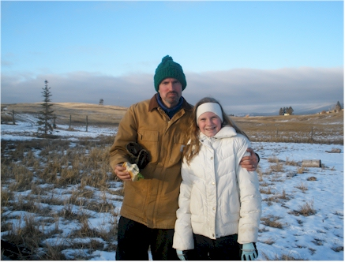 |
|
| This just in! Mary Beth was kind enough to share
this picture of Eric and Katie in Montana with me. He had a great trip! |
|